화약취급기능사 (2012-02-12 기출문제)
1과목: 화약 및 발파
1. 다음 중 암반사면의 파괴형태에 속하지 않는 것은?
- 평면파괴
- 취성파괴
- 쐐기파괴
- 전도파괴
(정답률: 알수없음)

2. 발파대상 암반의 표준 장약랴을 구하기 위한 시험발파(crater test)에서 장약량 0.75kg, 최소저항선 0.7m 조건으로 시험한 결과 누두지수가 1.⑤였다면 이 암반에 대한 표준장약량은? (단, 기타 조건은 동일하며, Dambrun의 누두지수 함수 이용)
- 1.12kg
- 0.78kg
- 0.67kg
- 0.55kg
(정답률: 알수없음)
3. 스무스 블라스팅을 위한 발파공의 지름이 45mm이고, 사용폭약은 정밀폭약으로 지름은 17mm일 때 디커플링 지수 (Eccoupling index)는 얼마인가?
- 0.4
- 1.5
- 2.7
- 4.5
(정답률: 알수없음)
4. 기폭약을 장전하는 방법 중 역기폭과 비교하여 정기폭에 대한 설명으로 옳지 않은 것은?
- 장공 발파에서 효과가 우수하다.
- 폭약을 다지기가 유리하다.
- 순폭성이 우수하다.
- 장전 폭약을 회수하는데 불리하다.
(정답률: 알수없음)
5. 다음 중 발파작업장 주변에 전기공작물이 있어서 미주전류가 예상되거나 정전기, 낙뢰 등의 위험이 있는 곳에서 안전하게 사용할 수 있는 뇌관은?
- 순발전기뇌관
- DS지발전기뇌관
- MS지발전기뇌관
- 비전기식뇌관
(정답률: 알수없음)
6. 다음 중 조성에 의한 혼합 화약류의 분류로 옳지 않은 것은?(오류 신고가 접수된 문제입니다. 반드시 정답과 해설을 확인하시기 바랍니다.)
- 니트라민류 : 헥소겐
- 질산염 화약 : 흑색화약
- 염소산염 폭약 : 스프링겔 폭약
- 과염소산염 폭약 : 칼릿
(정답률: 60%)
7. 다음 중 폭약의 겉보기 비중과 감도에 대한 설명으로 옳지 않은 것은?
- 폭약은 비중이 클수록 폭발속도나 맹도가 크다.
- 겉보기 비중이란 폭약량을 약포의 부피로 나눈 값이다.
- 폭약은 비중이 작을수록 기폭하기 어렵다.
- 지지중 폭약은 탄광 및 장공 발파에 사용된다.
(정답률: 알수없음)
8. 단위무게에 대한 폭발염을 높이고, 폭발 후 일산화탄소의 생성을 막기 위해 제조하는 뇌홍폭분의 혼합비는?
- 뇌홍 : KNO3 = 80 : 20
- 뇌홍 : KClO3 = 80 : 20
- 뇌홍 : KNO3 = 70 : 30
- 뇌홍 : KClO3 = 70 : 30
(정답률: 알수없음)
9. 초유폭약(ANFO)에 대한 설명으로 옳지 않은 것은?
- 질산암모늄과 경유를 혼합하여 제조한다.
- 흡습성이 있어 장기저장이 어렵다.
- 뇌관으로 기폭이 가능하여 별도의 전폭약포가 필요없다.
- 석회석 및 채석 등 노천채굴에 사용하기가 적합하다.
(정답률: 알수없음)
10. 도폭선의 내수시험에서 사용되는 도폭선의 길이과 수압 및 침수시간으로 옳은 것은?
- 길이 1.0m, 수압 0.1kg/cm2, 침수시간 1시간 이상
- 길이 1.3m, 수압 0.2kg/cm2, 침수시간 2시간 이상
- 길이 1.5m, 수압 0.3kg/cm2, 침수시간 3시간 이상
- 길이 2.0m, 수압 0.5kg/cm2, 침수시간 4시간 이상
(정답률: 알수없음)
11. 터널발파의 심빼기 공법 중 평행공 심빼기에 해당하는 것은?
- 피라미드 심빼기
- 부채살 심빼기
- 노르웨이식 심빼기
- 코로만트 심빼기
(정답률: 알수없음)
12. 다음 중 트렌치 발파에 대한 설명으로 옳지 않은 것은?
- 석유 송유관이나 가스 공급관 등을 묻기 위한 도량을 굴착하기 위한 발파이다.
- 계단의 높이에 비해 계단의 폭이 좁은 형태의 발파이다.
- 정상적인 계단식 발파보다 비장약량이 감소된다.
- 트렌치 발파에서 발파공은 경사천공을 실시한다.
(정답률: 알수없음)
13. 발파 위험구역 안의 통행을 막기 위해서 배치하는 경계원에게 확인시켜야 할 사항으로 옳지 않은 것은?
- 비석의 상태 점검
- 경계하는 위치
- 경계하는 구역
- 발파 완료 후의 연락방버
(정답률: 알수없음)
14. 다음 중 폭약의 폭발온도를 저하시키기 위하여 사용되는 감열소열제로 옳은 것은?
- 염화나트륨(NaCl)
- 염화수소(HCl)
- 질산바륨(Ba(NO3)2)
- 질산칼륨(KNO3)
(정답률: 알수없음)
15. 다음 중 ＜보기＞의 설명에 해당하는 것은?
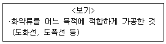
- 발사약
- 파괴약
- 기폭약
- 화공품
(정답률: 알수없음)
16. 폭약의 폭발속도에 영향을 주는 요소로 옳지 않은 것은?
- 약포의 지름
- 발파기의 용량
- 폭약의 양
- 폭약의 장전밀도
(정답률: 알수없음)
17. 화약의 폭발 생성 가스가 단열팽창을 할 때에 외부에 대해서 하는 일의 효과를 설명하는 것은?
- 동적효과
- 정적효과
- 충격열효과
- 파열효과
(정답률: 알수없음)
18. 니트로셀룰로오스에 대한 설명으로 옳은 것은?
- 산, 알칼리에 자연 분해되지 않는다.
- 건조하면 안전하나 습하면 타격이나 마찰에 의해 폭발한다.
- 에테르에 용해되지 않느다.
- 외관은 솜과 같고 암실에서 인광을 발한다.
(정답률: 알수없음)
19. 측정시간 동안의 변동 소음에너지를 시간적으로 평균하여 대수로 변환한 것으로 Leq dB로 표기하는 것은?
- 최고 소음 레벨
- 최저 소음 레벨
- 평균 소음 레벨
- 등가 소음 레벨
(정답률: 알수없음)
20. 자유면에 평행한 여러개의 발파공을 구멍지름, 공간간격, 천공길이를 동일하게 하여 전기뇌관으로 동시에 발파하는 방법을 무엇이라 하는가?
- 분할발파
- 지발발파
- 정밀발파
- 제발발파
(정답률: 알수없음)
2과목: 화약류 안전관리 관계 법규
21. 발파 진동속도를 표시할 때 카인(kine)이라는 단위를 쓴다. 다음 중 1카인(kine)과 동일한 것은?
- 1cm
- 1cm/sec
- 1cm/sec2
- 1gal
(정답률: 알수없음)
22. 낙추시험에 대한 설명으로 옳은 것은?
- 폭약의 폭발속도를 측정하는 시험
- 폭약의 충격감도를 측정하는 시험
- 폭약의 마찰계수를 측정하는 시험
- 폭약의 순폭도를 측정하는 시험
(정답률: 알수없음)
23. 다음 중 발파진동에 대한 설명으로 옳지 않은 것은?
- 발파로 인하여 발생하는 총 에너지 중에서 일부가 탄성파로 변환되어 발파진동으로 소비된다.
- 발파에 의한 지반진동은 변위, 입자속도, 가속도와 주파수로 표시된다.
- 발파진동의 진동파형은 자연지진에 비해 비교적 단순하다.
- 발파진동의 주파수 대역은 1Hz 이하이다.
(정답률: 알수없음)
24. 최대 지름이 130cm, 최소 지름이 120cm인 암석을 소할발파할 때의 장약량은 얼마인가? (단, 발파계수 C의값은 0.01로 한다.)
- 120g
- 130g
- 144g
- 169g
(정답률: 알수없음)
25. 암반분류법인 Q분류법에서 Q값을 구하는 식으로 옳은 것은?
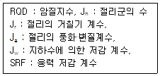
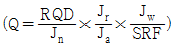
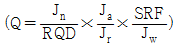
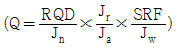
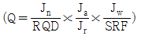
(정답률: 알수없음)
26. 운반표지를 하지 않고 운반할 수 있는 화약류의 수량으로 옳은 것은?
- 10kg 이하의 폭약
- 200개 이하의 공업용뇌관 또는 전기뇌관
- 2만개 이하의 총용뇌관
- 100m 이하의 도폭선
(정답률: 80%)
27. 화약류를 수출 또는 수입하고자 하는 사람은 그때마다 누구의 허가를 받아야 하는가?
- 경찰서장
- 지방경찰청장
- 경찰청장
- 행정안전부장관
(정답률: 알수없음)
28. 화약류 운반신고 방법에 대한 설명으로 옳은 것은?
- 특별한 사정이 없는 한 화약류 운반개시 12시간전까지 발송시 관할 경찰서장에게 신고해야 한다.
- 화약류의 운반기간이 경과한 때에는 운반신고필증을 도착지 관할 경찰서장에게 반납해야 한다.
- 화약류를 운반하지 아니하게 된 때에는 운반신고필증을 발송지 관할 경찰서장에게 반납할 필요가 없다.
- 화약류의 운반을 완료한 때에는 운반신고필증을 도착지 관할 경찰서장에게 반납해야 한다.
(정답률: 알수없음)
29. 꽃불류저장소의 위치·구조 및 설비의 기준 중 저장소의 마루 밑에는 몇 개 이상의 환기통을 설치해야 하는가? (단, 지상 1급저장소에 준하는 환기통 임)
- 1개 이상
- 2개 이상
- 3개 이상
- 4개 이상
(정답률: 알수없음)
30. 화약류의 정체 및 저장에 있어서 폭약 1톤에 해당하는 화공품의 환산수량으로 옳은 것은?
- 실탄 또는 공포탄 300만개
- 공업용뇌관 또는 전기뇌관 100만개
- 도폭선 100km
- 미진동파쇄기 10만개
(정답률: 알수없음)
31. 전기발파의 기술상의 기준 중 동력선 또는 전동선을 전원으로 사용하고자 하는 때에는 전선에 몇 암페어 이상의 전류가 흐르도록 하여야 하는가?
- 4암페어 이상
- 3암페어 이상
- 2암페어 이상
- 1암페어 이상
(정답률: 알수없음)
32. 다음 중 법령상 용어의 정의로 옳지 않은 것은?
- 정원이라 함은 동시에 동일 장소에서 작업할 수 있는 종업원의 최소 인원수를 말한다.
- 공실이라 함은 화약류의 제조작업을 하기 위하여 제조소 안에 설치된 건축물을 말한다.
- 정체량이라 함은 동일공실에 저장할 수 있는 화약류의 최대수량을 말한다.
- 보안물건이라 함은 화약류의 취급상의 위해로부터 보호가 요구되는 장비·시설 등을 말한다.
(정답률: 알수없음)
33. 화약류저장소가 보안거리 미달로 보안물건을 침범했을 경우 행정처분기준은?
- 허가취소
- 감량 또는 이전명령
- 6월 효력정지
- 3월 효력정지
(정답률: 알수없음)
34. 다음 중 경찰서장의 허가를 받아 설치할 수 있는 화약류저장소는?
- 1급 저장소
- 3급 저장소
- 장난감용 꽃불류저장소
- 도화선저장소
(정답률: 80%)
35. 화약류의 사용자를 관할하는 경찰서장의 사용허가를 받지 아니하고 화약류를 발파 또는 연소시킬 경우의 벌칙으로 옳은 것은? (단, 예외사하은 제외)
- 5년 이하의 징역 또는 1천만원 이하의 벌금형
- 3년 이하의 징역 또는 700만원 이하의 벌금형
- 2년 이하의 징역 또는 500만원 이하의 벌금형
- 300만원 이하의 벌금형
(정답률: 알수없음)
36. 다음 중 암석의 윤회에 관한 설명으로 옳지 않은 것은?
- 암석윤회는 지구의 내부, 외부의 상호작용으로 일어난다.
- 암석윤회는 지구가 생성된 이래로 오랜 기간동안 계속적으로 반복되고 있다.
- 암석윤회에 소요되는 시간은 지질시대와 상관없이 항상 일정하다.
- 암석윤회과정을 통하여 화성암은 퇴적암이 될 수 있고, 퇴적암은 변성암이 될수 있으며, 변성암은 화성암이 될 수 있다.
(정답률: 알수없음)
37. 다음은 화성암의 주 구성 광물이다. 경도(굳기)가 가장 큰 것은?
- 석영
- 백운모
- 정장석
- 휘석
(정답률: 알수없음)
38. 다음 쇄설성 조직을 나타내는 퇴적암은?
- 석회암
- 암염
- 역암
- 규조토
(정답률: 59%)
39. 화학 조성에 의한 화성암의 분로 중 산성암에 해당하는 암석은?
- 화강암
- 섬록암
- 현무암
- 감람암
(정답률: 알수없음)
40. 절리의 특징에 대한 설명으로 옳지 않은 것은?
- 단층, 습곡의 원인이 된다.
- 지표수가 지하로 흘러들어가는 통로가 된다.
- 풍화, 침식작용을 촉진시키는 원인이 된다.
- 채석장에서 암석 채굴시 절리를 이용하여 효율적인 작업을 할 수 있다.
(정답률: 알수없음)
3과목: 암석 및 지질
41. 주향이 북에서 50°서, 경사가 북동으로 30°일 때 주향, 경사의 표시방법으로 옳은 것은? (단, 주황, 경사의 순서임)
- S50°E, 30°SE
- E50°S, 30°ES
- N50°W, 30°NE
- W50°N, 30°EN
(정답률: 알수없음)
42. 습곡구조에서 구부러져 내려간 가장 낮은 부분을 무엇이라 하는가?
- 배사
- 윙
- 항사
- 축
(정답률: 알수없음)
43. 흐른 무늬가 있는 암석이라는 뜻으로 화산에서 분출된 마그마가 흘러내리면서 굳어져서 평행구조를 가진 화산암은?
- 현무암
- 화강암
- 유문암
- 안산암
(정답률: 알수없음)
44. 다음 그림에서 단층의 경사이동을 나타낸 것은?
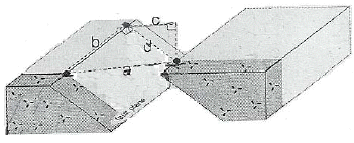
- a
- b
- c
- d
(정답률: 알수없음)
45. 우리나라에서 가장 규모가 큰 지각변동인 대보조산운동이 일어난 시기로 옳은 것은?
- 제3기
- 트라이아스기
- 페릉기
- 쥐라기
(정답률: 60%)
46. 다음 중 지하 심부 암석이 침식을 받아 지표에 노출되면 암석에 작용하던 상부하중이 제거되면서 지표면과 평행하게 형성되는 절리는?
- 신장절리
- 주상절리
- 판상절리
- 구상절리
(정답률: 알수없음)
47. 다음 지질도에서 나타나는 부정합은 무엇인가?
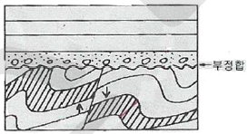
- 평행부정합
- 사교부정합
- 비정합
- 준정합
(정답률: 알수없음)
48. 셰일이 광역변성작용을 받아 변성정도가 높아짐에 따라 형성되는 변성암의 순서로 옳은 것은?
- 슬레이트 → 천매암 → 편암 → 편마암
- 천매암 → 편마암 → 슬레이트 → 편암
- 편암 → 천매암 → 편마암 → 슬레이트
- 편마암 → 편암 → 슬레이트 → 천매암
(정답률: 알수없음)
49. 다음 중 현미경으로도 미정이 거의 발견되지 않고 전부 비결정질로 구성되어 있는 화성암의 조직은?
- 현정질 조직
- 입상 조직
- 유리질 조직
- 반상 조직
(정답률: 알수없음)
50. 화성암체의 산출상태에 있어서 모암과 조화적 관입(concordant intrusion) 관계인 것은?
- 암상, 병반
- 암맥, 암상
- 암맥, 저반
- 암주, 저반
(정답률: 알수없음)
51. 다음 중 규장암에 대한 설명으로 옳지 않은 것은?
- 간혹 석영의 반정을 가진다.
- 식물의 화석을 포함하는 경우가 많다.
- 흰색이며 비현정질의 치밀한 암석이다.
- 화성암으로 산성암에 해당한다.
(정답률: 알수없음)
52. 다음 중 야외에서 단층을 확인하는 증거로 사용되지 않는 것은?
- 단층점토
- 단층면의 주향·경사
- 단층각력
- 단층면의 긁힌 자국
(정답률: 70%)
53. 습곡의 축면이 거의 수평으로 기울어져 있는 습곡은?
- 배심습곡
- 횡와습곡
- 향심습곡
- 동형습곡
(정답률: 알수없음)
54. 다음 ( )안에 내용으로 알맞은 것은?
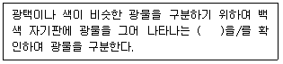
- 냄새
- 경도
- 조흔색
- 투명도
(정답률: 알수없음)
55. 다음 중 접촉변성암에 해당하는 것은?
- 편암
- 혼펠스
- 편마암
- 천매암
(정답률: 알수없음)
56. 파쇄작용이 주원인이 되어 이루어진 변성암은?
- 규암
- 편암
- 대리암
- 압쇄암
(정답률: 알수없음)
57. 다음 중 고생대의 마지막 기(紀)는 어느 것인가?
- 페름기
- 데본기
- 캄브리아기
- 실루리아기
(정답률: 알수없음)
58. 다음과 같은 특징을 갖는 변성작용은 무엇인가?
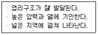
- 접촉변성작용
- 열변성작용
- 파쇄변성작용
- 광역변성작용
(정답률: 알수없음)
59. 다음과 같은 특징을 갖는 단층은 무엇인가?
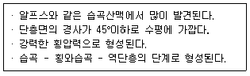
- 오버스러스트
- 성장단층
- 변환단층
- 계단단층
(정답률: 알수없음)
60. 다음 ( )안의 내용으로 가장 알맞은 것은?
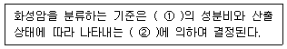
- ① MgO, ② 색상
- ① CaO, ② 반점
- ① FeO, ② 압력
- ① SiO2, ② 조직
(정답률: 알수없음)
취성파괴는 암반 내부의 화학적 반응으로 인해 발생하는 파괴 현상으로, 암석 내부의 미량한 물질이 화학적 반응을 일으켜 암석 구조를 파괴시키는 것입니다.
반면, 평면파괴는 암석 내부의 약한 평면 구조를 따라 파괴되는 것이고, 쐐기파괴는 암석 내부의 쐐기 모양 구조를 따라 파괴되는 것입니다. 전도파괴는 암석 내부의 결함이나 균열을 따라 파괴되는 것입니다.